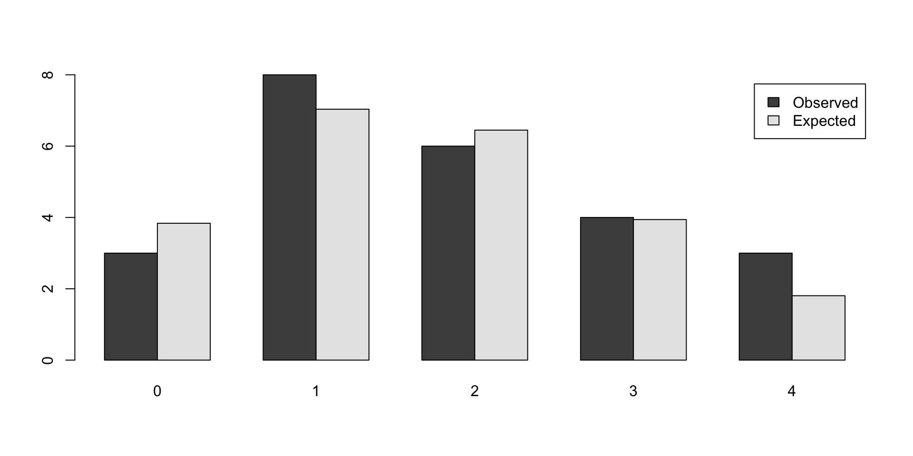
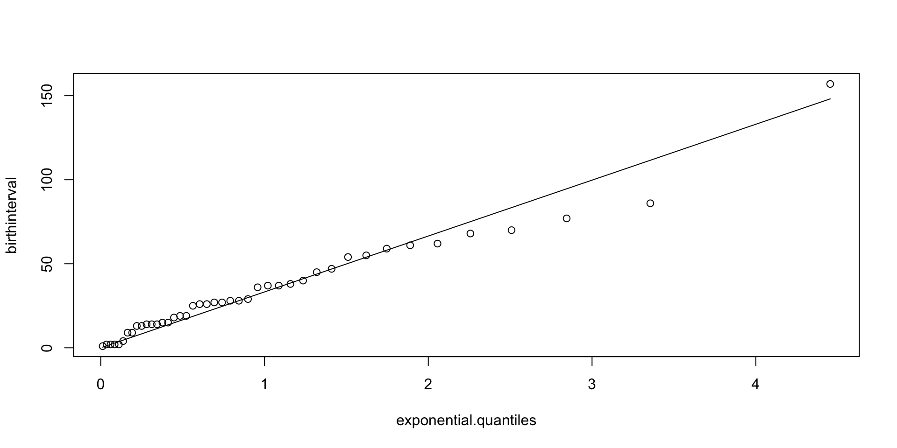

In the multivariate case, the normal-normal model is \[
\theta \sim N(\mu_0,\Sigma_0), \quad y \mid \theta \sim N(\theta,\Sigma).
\] The posterior distribution is \[
\theta \mid y \sim N(\mu_1,\Sigma_1),
\] where \[
\Sigma_1 = (\Sigma_0^{-1} + \Sigma^{-1})^{-1}, \quad \mu_1 = \Sigma_1(\Sigma_0^{-1}\mu_0 + \Sigma^{-1}y).
\] The predictive distribution is \[
y_{new} \mid y \sim N(\mu_1,\Sigma_1 + \Sigma).
\]
Normal With Unknown Variance
Consider, another example, when mean \(\mu\) is fixed and variance is a random variable which follows some distribution \(\sigma^2 \sim p(\sigma^2)\). Given an observed sample \(y\), we can update the distribution over variance using the Bayes rule \[
p(\sigma^2 \mid y) = \dfrac{p(y\mid \sigma^2 )p(\sigma^2)}{p(y)}.
\] Now, the total probability in the denominator can be calculated as \[
p(y) = \int p(y\mid \sigma^2 )p(\sigma^2) d\sigma^2.
\]
Normal With Unknown Variance
A conjugate prior that leads to analytically calculable integral for variance under the normal likelihood is the inverse Gamma. Thus, if \[
\sigma^2 \mid \alpha,\beta \sim IG(\alpha,\beta) = \dfrac{\beta^{\alpha}}{\Gamma(\alpha)}\sigma^{2(-\alpha-1)}\exp\left(-\dfrac{\beta}{\sigma^2}\right)
\] and \[
y \mid \mu,\sigma^2 \sim N(\mu,\sigma^2)
\] Then the posterior distribution is another inverse Gamma \(IG(\alpha_{\mathrm{posterior}},\beta_{\mathrm{posterior}})\), with \[
\alpha_{\mathrm{posterior}} = \alpha + 1/2, ~~\beta_{\mathrm{posterior}} = \beta + \dfrac{y-\mu}{2}.
\]
Normal With Unknown Variance
Now, the predictive distribution over \(y\) can be calculated by \[
p(y_{new}\mid y) = \int p(y_{new},\sigma^2\mid y)p(\sigma^2\mid y)d\sigma^2.
\] Which happens to be a \(t\)-distribution with \(2\alpha_{\mathrm{posterior}}\) degrees of freedom, mean \(\mu\) and variance \(\alpha_{\mathrm{posterior}}/\beta_{\mathrm{posterior}}\).
Satya Nadella: CEO of Microsoft
In 2014, Satya Nadella became the CEO of Microsoft.
The stock price of Microsoft has been on a steady rise since then.
Suppose that you are a portfolio manager and you are interested in analyzing the returns of Microsoft stock compared to the market.
Suppose you are managing a portfolio with two positions stock of Microsoft (MSFT) and an index fund that follows S&P500 index and tracks overall market performance.
What is the mean returns of the positions in our portfolio?
Satya Nadella: CEO of Microsoft
Assume the prior for the mean returns is a bivariate normal distribution, let \(\mu_0 = (\mu_{M}, \mu_{S})\) represent the prior mean returns for the stocks.
The covariance matrix \(\Sigma_0\) captures your beliefs about the variability and the relationship between these stocks’ returns in the prior. \[
\Sigma_0 = \begin{bmatrix} \sigma_{M}^2 & \sigma_{MS} \\ \sigma_{MS} & \sigma_{S}^2 \end{bmatrix},
\]
We will use the sample mean and covariance matrix of the historical returns as the prior mean and covariance matrix.
Satya Nadella: CEO of Microsoft
The likelihood of observing the data, given the mean returns, is also a bivariate normal distribution. \[
\Sigma = \begin{bmatrix} \sigma_{M}^2 & \sigma_{MS} \\ \sigma_{MS} & \sigma_{S}^2 \end{bmatrix},
\] where \(\sigma_{M}^2\) and \(\sigma_{S}^2\) are the sample variances of the observed returns of MSFT and SPY, respectively, and \(\sigma_{MS}\) is the sample covariance of the observed returns of MSFT and SPY. The likelihood mean is given by \[
\mu = \begin{bmatrix} \mu_{M} \\ \mu_{S} \end{bmatrix},
\] where \(\mu_{M}\) and \(\mu_{S}\) are the sample means of the observed returns of MSFT and SPY, respectively.
Satya Nadella: CEO of Microsoft
You update your beliefs (prior) about the mean returns using the observed data (likelihood).
The posterior distribution, which combines your prior beliefs and the new information from the data, is also a bivariate normal distribution.
The mean \(\mu_{\text{post}}\) and covariance \(\Sigma_{\text{post}}\) of the posterior are calculated using Bayesian updating formulas, which involve \(\mu_0\), \(\Sigma_0\), \(\mu\), and \(\Sigma\).
We use observed returns prior to Nadella’s becoming CEO as our prior and analyze the returns post 2014.
Satya Nadella: CEO of Microsoft
Code
library(quantmod)getSymbols(c("MSFT", "SPY"), from ="2001-01-01", to ="2023-12-31")
The mixture of conjugate priors is a powerful tool for modeling complex data. \[
\theta \sim p(\theta) = \sum_{k=1}^K \pi_k p_k(\theta).
\] Then the posterior is also a mixture of normal distributions, that is \[
p(\theta\mid y) = p(y\mid \theta)\sum_{k=1}^K \pi_k p_k(\theta)/C.
\]
Mixtures of Conjugate Priors
We introduce a normalizing constant for each component \[
C_k = \int p(y\mid \theta)p_k(\theta)d\theta.
\] then \[
p_k(\theta\mid y) = p_k(\theta)p(y\mid \theta)/C_k
\] is a proper distribution and our posterior is a mixture of these distributions \[
p(\theta\mid y) = \sum_{k=1}^K \pi_k C_k p_k(\theta\mid y)/C.
\] Meaning that we need to require \[
\dfrac{\sum_{k=1}^K \pi_k C_k}{C} = 1.
\] or \[
C = \sum_{k=1}^K \pi_k C_k
\]
Mixture of two normal distributions
The prior distribution is a mixture of two normal distributions, that is \[
\mu \sim 0.5 N(0,1) + 0.5 N(5,1).
\] The likelihood is a normal distribution with mean \(\mu\) and variance 1, that is \[
y \mid \mu \sim N(\mu,1).
\] The posterior distribution is a mixture of two normal distributions, that is \[
p(\mu \mid y) \propto \phi(y\mid \mu,1) \left(0.5 \phi(\mu\mid 0,1) + 0.5 \phi(\mu\mid 5,1)\right),
\] where \(\phi(x\mid \mu,\sigma^2)\) is the normal distribution with mean \(\mu\) and variance \(\sigma^2\).
Mixture of two normal distributions
We can calculate it using property of a normal distribution \[
\phi(x\mid \mu_1,\sigma_1^2)\phi(x\mid \mu_2,\sigma_2^2) = \phi(x\mid \mu_3,\sigma_3^2)\phi(\mu_1-\mu_2\mid 0,\sigma_1^2+\sigma_2^2)
\] where \[
\mu_3 = \dfrac{\mu_1/\sigma_2^2 + \mu_2/\sigma_1^2}{1/\sigma_1^2 + 1/\sigma_2^2}, \quad \sigma_3^2 = \dfrac{1}{1/\sigma_1^2 + 1/\sigma_2^2}.
\]
Mixture of two normal distributions
Given, we observed \(y = 2\), we can calculate the posterior distribution for \(\mu\)
Waiting times between events: consecutive arrivals of a Poisson process is exponentially distributed with mean \(1/\lambda\). \[
f(x;\lambda) = \lambda e^{-\lambda x}, ~ x \geq 0
\]
\(\lambda\) is the rate parameter, which is the inverse of the mean
special case of the Gamma distribution with shape 1 and scale \(1/\lambda\).
Exponential Distribution
Parameters
Expected value
\(\mu = \E{X} = 1/\lambda\)
Variance
\(\sigma^2 = \Var{X} = 1/\lambda^2\)
Exponential Model: Examples
Lifespan of Electronic Components: The exponential distribution can model the time until a component fails in systems where the failure rate is constant over time.
Time Between Arrivals: In a process where events (like customers arriving at a store or calls arriving at a call center) occur continuously and independently, the time between these events can often be modeled with an exponential distribution.
Radioactive Decay: The time until a radioactive atom decays is often modeled with an exponential distribution.
Exponential-Gamma Model
The Exponential-Gamma model assumes that the data follows an exponential distribution (likelihood). - The Gamma distribution is a flexible two-parameter family of distributions and can model a wide range of shapes. \[\begin{align*}
\lambda &\sim \text{Gamma}(\alpha, \beta) \\
x_i &\sim \text{Exponential}(\lambda)
\end{align*}\]
The posterior distribution of the rate parameter \(\lambda\) is given by: \[
p(\lambda\mid x_1, \ldots, x_n) \propto \lambda^{\alpha - 1} e^{-\beta\lambda} \prod_{i=1}^n \lambda e^{-\lambda x_i} = \lambda^{\alpha + n - 1} e^{-(\beta + \sum_{i=1}^n x_i)\lambda}
\]
Exponential-Gamma Model
Posterior is a Gamma distribution with shape parameter \(\alpha + n\) and rate parameter \(\beta + \sum_{i=1}^n x_i\). The posterior mean and variance are given by: \[
\mathbb{E}[\lambda|x_1, \ldots, x_n] = \frac{\alpha + n}{\beta + \sum_{i=1}^n x_i}, \quad \mathrm{Var}[\lambda|x_1, \ldots, x_n] = \frac{\alpha + n}{(\beta + \sum_{i=1}^n x_i)^2}.
\] Notice, that \(\sum x_i\) is the sufficient statistic for inference about parameter \(\lambda\)!
Exponential-Gamma Model
Reliability Engineering: In situations where the failure rate of components or systems may not be constant and can vary, the Exponential-Gamma model can be used to estimate the time until failure, incorporating uncertainty in the failure rate.
Medical Research: For modeling survival times of patients where the rate of mortality or disease progression is not constant and varies across a population. The variability in rates can be due to different factors like age, genetics, or environmental influences.
Ecology: In studying phenomena like the time between rare environmental events (e.g., extreme weather events), where the frequency of occurrence can vary due to changing climate conditions or other factors.
Exploratory Data Analysis
Before deciding on a parametric model for a dataset. There are several tools that we use to choose the appropriate model. These include
Theoretical assumptions underlying the distribution (our prior knowledge about the data)
Exploratory data analysis
Formal goodness-of-fit tests
The two most common tools for exploratory data analysis are Q-Q plot, scatter plots and bar plots/histograms.
Q-Q plot
Q-Q plot simply compares the quantiles of your data with the quantiles of a theoretical distribution (like normal, exponential, etc.).
Quantile is the fraction (or percent) of points below the given value.
That is, the \(i\)-th quantile is the point \(x\) for which \(i\)% of the data lies below \(x\).
On a Q-Q plot, if the two data sets come from a population with the same distribution, we should see the points forming a line that’s roughly straight.
Q-Q plot
If the two data sets \(x\) and \(y\) come from the same distribution, then the points \((x_{(i)}, y_{(i)})\) should lie roughly on the line \(y = x\).
If \(y\) comes from a distribution that’s linear in \(x\), then the points \((x_{(i)}, y_{(i)})\) should lie roughly on a line, but not necessarily on the line \(y = x\).
Noraml Q-Q plot
Q-Q plot for the Data on birth weights of babies born in a Brisbane hospital on December 18, 1997. The data set contains 44 records. A more detailed description of the data set can be found in UsingR manual.
How about the times in hours between births of babies?
Code
hr =ceiling(babyboom$running.time/60)BirthsByHour =tabulate(hr)# Number of hours with 0, 1, 2, 3, 4 birthsObservedCounts =table(BirthsByHour) # Average number of births per hourBirthRate=sum(BirthsByHour)/24# Expected counts for Poisson distributionExpectedCounts=dpois(0:4,BirthRate)*24# bind into matrix for plottingObsExp <-rbind(ObservedCounts,ExpectedCounts) barplot(ObsExp,names=0:4, beside=TRUE,legend=c("Observed","Expected"))

Exponential Q-Q plot
What about the Q-Q plot?
Code
# birth intervalsbirthinterval=diff(babyboom$running.time) # quantiles of standard exponential distribution (rate=1) exponential.quantiles =qexp(ppoints(43)) qqplot(exponential.quantiles, birthinterval)lmb=mean(birthinterval)lines(exponential.quantiles,exponential.quantiles*lmb) # Overlay a line

Here
ppoints function computes the sequence of probability points
qexp function computes the quantiles of the exponential distribution
diff function computes the difference between consecutive elements of a vector